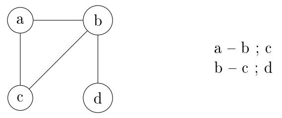
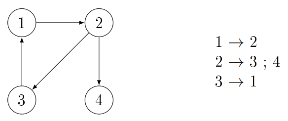
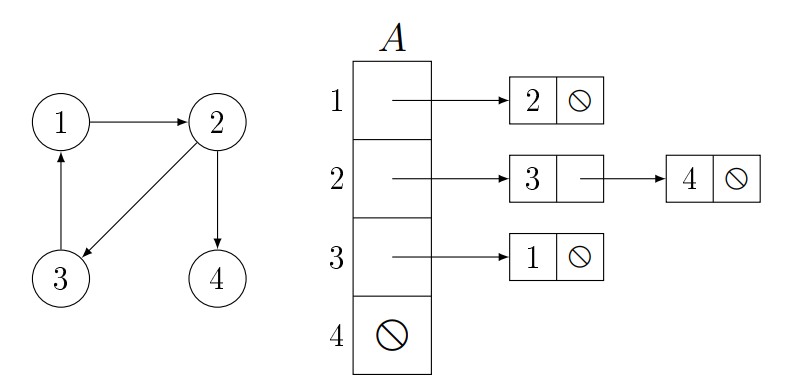
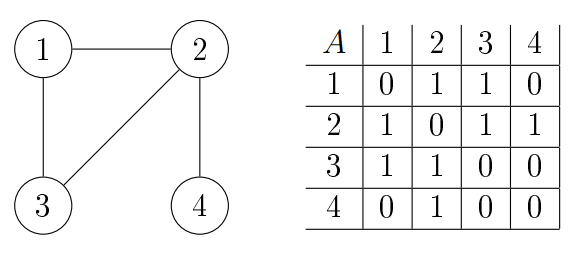

Alapfogalmak:
Egyszerű gráf:
Gráf alatt egy $G = (V, E)$ rendezett párost értünk, ahol $V$ a csúcsok
tetszőleges,
véges halmaza, $E \subseteq V \times V \setminus \{(u, u) : u \in V \}$ pedig az élek halmaza. Ha $V
=
\{\}$, akkor üres gráfról, ha $V \neq \{\},$ akkor nemüres gráfról beszélünk. Kizárjuk a párhuzamos-
és hurokéleket, ezekkel nem foglalkozunk.
Irányítatlan gráf:
A $G = (V, E)$ gráf irányítatlan, ha tetszőleges $(u, v) \in E$ élre $(u, v) =
(v,
u)$.
Irányított gráf:
A $G = (V, E)$ gráf irányított, ha tetszőleges $(u, v),(v, u) \in E$ élpárra $(u,
v)
\neq (v, u)$. Ilyenkor azt mondjuk, hogy az $(u, v)$ él fordítottja a $(v, u)$ él, és viszont.
Út:
A $G = (V, E)$ gráf csúcsainak egy $< u_{0}, u_{1}, . . . u_{n}>$ $(n \in N)$
sorozata a gráf egy útja, ha tetszőleges $i \in 1..n$-re $(u_{i-1}, u_{i}) \in E$. Ezek az
$(u_{i-1}, u_{i})$ élek az út élei. Az út hossza ilyenkor $n$, azaz az utat alkotó élek számával
egyenlő.
Kör:
A kör olyan út, aminek kezdő és végpontja (csúcsa) azonos, az út hossza $> 0$, és
az
élei páronként különbözőek.
Körmentes gráf:
Körmentes gráf alatt olyan gráfot értünk, amiben csak körmentes utak vannak.
Ritka gráf:
Egy gráf ritka gráf, ha $| E |$ sokkal kisebb, mint $| V |^2$.
Sűrű gráf:
Egy gráf sűrű gráf, ha $| E |$ megközelíti $| V |^2$ -et.
Összefüggő gráf:
Az irányítatlan gráf összefüggő, ha tetszőleges csúcsából bármelyik csúcsába
vezet
út. Az irányított gráf összefüggő, ha az irányítatlan megfelelője összefüggő.
Gráfábrázolások:
Grafikus ábrázolás és szöveges ábrázolás:
Irányítatlan: Felsoroljuk a csúcs szomszédait, ( $a - b ; c$ ). Fontos,
hogy
az élek csak egyszer szerepelnek, tehát, ha van $a - b$, akkor már nem kell $b - a$. Ez azért
van, mert az irányítatlan gráf definíciója szerint, tetszőleges $(u, v) \in E$ élre igaz, hogy $(u,
v) = (v,u)$.

Irányított: Nyíllal elválasztva felsoroljuk a csúcsok rákövetkezőit ( $a
\rightarrow b ; c$ ).

Szomszédossági listás (Éllistás):
A gráfot egy $A/1 : Edge^*[n]$ pointertömb segítségével ábrázoljuk. $A[i]$
egy
S1L,
ami tartalmazza a $v_i$ csúcs szomszédait vagy rákövetkezőit. A csúcsokat növekvően írjuk le
konvenció
szerint. Az $Edge$-nek van egy $v$ adattagja, ami a csúcs értékét tartalmazza és van egy $next$
adattagja, ami a következő csúcsra mutató pointer.
| $Edge$ |
$+v: \mathbb{N}$
$+next: Edge^*$ |
Irányítatlan gráf esetében $A[i]$ egy S1L, ami tartalmazza a $v_i$ csúcs
szomszédait.
Fontos kiemelni, hogy a szöveges ábrázolással szembe, itt le kell írni az oda-vissza utakat is,
tehát a
listák hosszainak összege $2\cdot|E|$ lesz. Irányított gráf esetében a szomszédsági listák hosszainak
összege $|E|$. A szomszédossági listás ábrázoláshoz szükséges tárterület mérete $\Theta
(V +
E)$.
A szomszédsági listás ábrázolás hátránya, hogy nehéz eldönteni, szerepel-e egy él
a
gráfban, hiszen ehhez az S1L-ben kell keresni. Ez a hátrány kiküszöbölhető csúcsmátrix
használatával, ez
azonban aszimptotikusan növeli a szükséges tárterület méretét. A szomszédsági listákon alapuló
ábrázolást inkább ritka gráfokra használjuk.

Szomszédossági mátrixos (Csúcsmátrixos):
Egy $A/1 : bit[n, n]$ mátrix reprezentálja, ahol $n = |V|$, tehát a
csúcsmátrix
mérete $|V|\times|V|$. Mivel ez egy bit mátrix, ezért vagy $0$-ás vagy $1$-es lehet csak benne:
- $0$ jelenti azt, hogy nincs él a két csúcs között, $A[i, j] = 0 \iff (v_i , v_j ) \notin E$.
- $1$ jelenti azt, hogy van él a két csúcs között, $A[i, j] = 1 \iff (v_i , v_j ) \in E$.
A csúcsmátrix $\Theta (V^2)$ tárterületet foglal le, függetlenül a gráf
éleinek számától.
Irányítatlan esetben elég lenne csak az alsó vagy felső háromszögmátrixot
ábrázolni,
mivel a főátlóra szimmetrikus. Ezzel majdnem felére csökkenthetjük az ábrázoláshoz szükséges
tárterület
méretét. A főátlóban mindig $0$-ák vannak, mivel nem foglalkozunk hurokélekkel.
Ennek az ábrázolásnak nagy előnye, hogy $\Theta (1)$ alatt eldönthető, hogy egy
él
benne van-e a gráfban, $(v_i, v_j) \in E$. A csúcsmátrixos ábrázolás előnyösebb lehet sűrű gráfok esetén.

Tárigény:
A szomszédsági listák együttesen aszimptotikusan kevesebb tárterületet
igényelnek,
mint a csúcsmátrix, azonban a használat során hatékonyságban ugyanennyivel elmaradnak attól, így ha
a
gráf mérete nem túl nagy, akkor kedvezőbb a hatékonyabb és egyszerűbb csúcsmátrixos ábrázolást
használni.